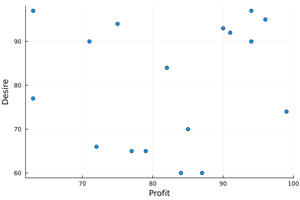
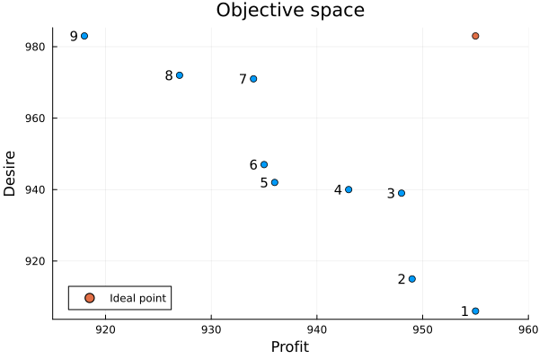

Multi-objective knapsack
This tutorial was generated using Literate.jl. Download the source as a .jl file.
This tutorial extends the classic knapsack problem to two objectives— maximising both profit and desirability—and solves it using MultiObjectiveAlgorithms.jl. It demonstrates how to visualise and navigate the Pareto frontier to support decision-making.
Learning intentions:
- Extend a single-objective binary integer program to two objectives by passing a vector of expressions to
@objective - Enumerate all Pareto-optimal solutions and access each one using
result_countand theresultkeyword inobjective_value - Plot the objective space to visualise trade-offs and identify a preferred solution from the Pareto frontier
Required packages
This tutorial uses the following packages:
using JuMPimport HiGHSimport MultiObjectiveAlgorithms as MOAimport PlotsMultiObjectiveAlgorithms.jl is a package which implements a variety of algorithms for solving multi-objective optimization problems. Because it is a long package name, we import it instead as MOA.
Formulation
The knapsack problem is a classic problem in mixed-integer programming. Given a collection of items $i \in I$, each of which has an associated weight, $w_i$, and profit, $p_i$, the knapsack problem determines which profit-maximizing subset of items to pack into a knapsack such that the total weight is less than a capacity $c$. The mathematical formulation is:
\[\begin{aligned} \max & \sum\limits_{i \in I} p_i x_i \\ \text{s.t.}\ \ & \sum\limits_{i \in I} w_i x_i \le c\\ & x_i \in \{0, 1\} && \forall i \in I \end{aligned}\]
where $x_i$ is $1$ if we pack item $i$ into the knapsack and $0$ otherwise.
For this tutorial, we extend the single-objective knapsack problem by adding another objective: given a desirability rating, $r_i$, we wish to maximize the total desirability of the items in our knapsack. Thus, our mathematical formulation is now:
\[\begin{aligned} \max & \sum\limits_{i \in I} p_i x_i \\ & \sum\limits_{i \in I} r_i x_i \\ \text{s.t.}\ \ & \sum\limits_{i \in I} w_i x_i \le c\\ & x_i \in \{0, 1\} && \forall i \in I \end{aligned}\]
Data
The data for this example was taken from vOptGeneric, and the original author was @xgandibleux.
profit = [77, 94, 71, 63, 96, 82, 85, 75, 72, 91, 99, 63, 84, 87, 79, 94, 90]desire = [65, 90, 90, 77, 95, 84, 70, 94, 66, 92, 74, 97, 60, 60, 65, 97, 93]weight = [80, 87, 68, 72, 66, 77, 99, 85, 70, 93, 98, 72, 100, 89, 67, 86, 91]capacity = 900N = length(profit)17Comparing the capacity to the total weight of all the items:
capacity / sum(weight)0.6428571428571429shows that we can take approximately 64% of the items.
Plotting the items, we see that there are a range of items with different profits and desirability. Some items have a high profit and a high desirability, others have a low profit and a high desirability (and vice versa).
Plots.scatter( profit, desire; xlabel = "Profit", ylabel = "Desire", legend = false,)
The goal of the bi-objective knapsack problem is to choose a subset which maximizes both objectives.
JuMP formulation
Our JuMP formulation is a direct translation of the mathematical formulation:
model = Model()@variable(model, x[1:N], Bin)@constraint(model, sum(weight[i] * x[i] for i in 1:N) <= capacity)@expression(model, profit_expr, sum(profit[i] * x[i] for i in 1:N))@expression(model, desire_expr, sum(desire[i] * x[i] for i in 1:N))@objective(model, Max, [profit_expr, desire_expr])2-element Vector{AffExpr}:
77 x[1] + 94 x[2] + 71 x[3] + 63 x[4] + 96 x[5] + 82 x[6] + 85 x[7] + 75 x[8] + 72 x[9] + 91 x[10] + 99 x[11] + 63 x[12] + 84 x[13] + 87 x[14] + 79 x[15] + 94 x[16] + 90 x[17]
65 x[1] + 90 x[2] + 90 x[3] + 77 x[4] + 95 x[5] + 84 x[6] + 70 x[7] + 94 x[8] + 66 x[9] + 92 x[10] + 74 x[11] + 97 x[12] + 60 x[13] + 60 x[14] + 65 x[15] + 97 x[16] + 93 x[17]Note how we form a multi-objective program by passing a vector of scalar objective functions.
Solution
To solve our model, we need an optimizer which supports multi-objective linear programs. One option is to use the MultiObjectiveAlgorithms.jl package.
set_optimizer(model, () -> MOA.Optimizer(HiGHS.Optimizer))MultiObjectiveAlgorithms.jl supports many different algorithms for solving multiobjective optimization problems. One option is the epsilon-constraint method:
set_attribute(model, MOA.Algorithm(), MOA.EpsilonConstraint())Let's solve the problem and see the solution
optimize!(model)----------------------------------------------
MultiObjectiveAlgorithms.jl
----------------------------------------------
Algorithm: EpsilonConstraint
----------------------------------------------
solve # Obj. 1 Obj. 2 Time
----------------------------------------------
1 -9.55000e+02 -9.06000e+02 2.71370e-02
2 -9.55000e+02 -9.06000e+02 3.28140e-02
3 -9.18000e+02 -9.83000e+02 4.65939e-02
4 -9.18000e+02 -9.83000e+02 6.02670e-02
6 -9.27000e+02 -9.72000e+02 8.30109e-02
8 -9.34000e+02 -9.71000e+02 1.03216e-01
10 -9.35000e+02 -9.47000e+02 1.57379e-01
12 -9.36000e+02 -9.42000e+02 2.47964e-01
14 -9.43000e+02 -9.40000e+02 2.86366e-01
16 -9.48000e+02 -9.39000e+02 3.14456e-01
18 -9.49000e+02 -9.15000e+02 3.47619e-01
20 -9.55000e+02 -9.06000e+02 3.57697e-01
----------------------------------------------
termination_status: OPTIMAL
result_count: 9
Total solve time: 3.64979e-01
Time spent in subproblems: 3.40732e-01 (93%)
Number of subproblems: 21
----------------------------------------------assert_is_solved_and_feasible(model)solution_summary(model)solution_summary(; result = 1, verbose = false)
├ solver_name : MOA[algorithm=MultiObjectiveAlgorithms.EpsilonConstraint, optimizer=HiGHS]
├ Termination
│ ├ termination_status : OPTIMAL
│ ├ result_count : 9
│ ├ raw_status : Solve complete. Found 9 solution(s)
│ └ objective_bound : [9.55000e+02,9.83000e+02]
├ Solution (result = 1)
│ ├ primal_status : FEASIBLE_POINT
│ ├ dual_status : NO_SOLUTION
│ └ objective_value : [9.55000e+02,9.06000e+02]
└ Work counters
└ solve_time (sec) : 3.64979e-01There are 9 solutions available. We can also use result_count to see how many solutions are available:
result_count(model)9Accessing multiple solutions
Access the nine different solutions in the model using the result keyword to solution_summary, value, and objective_value:
solution_summary(model; result = 5)solution_summary(; result = 5, verbose = false)
└ Solution (result = 5)
├ primal_status : FEASIBLE_POINT
├ dual_status : NO_SOLUTION
└ objective_value : [9.36000e+02,9.42000e+02]@assert primal_status(model; result = 5) == FEASIBLE_POINTassert_is_solved_and_feasible(model; result = 5)objective_value(model; result = 5)2-element Vector{Float64}:
936.0
942.0Note that because we set a vector of two objective functions, the objective value is a vector with two elements. We can also query the value of each objective separately:
value(profit_expr; result = 5)936.0Visualizing objective space
Unlike single-objective optimization problems, multi-objective optimization problems do not have a single optimal solution. Instead, the solutions returned represent possible trade-offs that the decision maker can choose between the two objectives. A common way to visualize this is by plotting the objective values of each of the solutions:
plot = Plots.scatter( [value(profit_expr; result = i) for i in 1:result_count(model)], [value(desire_expr; result = i) for i in 1:result_count(model)]; xlabel = "Profit", ylabel = "Desire", title = "Objective space", label = "", xlims = (915, 960),)for i in 1:result_count(model) y = objective_value(model; result = i) Plots.annotate!(y[1] - 1, y[2], (i, 10))endideal_point = objective_bound(model)Plots.scatter!([ideal_point[1]], [ideal_point[2]]; label = "Ideal point")
Visualizing the objective space lets the decision maker choose a solution that suits their personal preferences. For example, result #7 is close to the maximum value of profit, but offers significantly higher desirability compared with solutions #8 and #9.
The set of items that are chosen in solution #7 are:
items_chosen = [i for i in 1:N if value(x[i]; result = 7) > 0.9]11-element Vector{Int64}:
2
3
5
6
8
10
11
12
15
16
17Next steps
MultiObjectiveAlgorithms.jl implements a number of different algorithms. Try solving the same problem using MOA.Dichotomy(). Does it find the same solution?